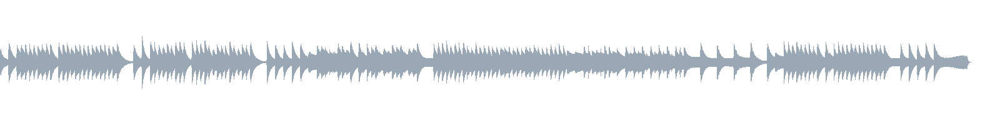
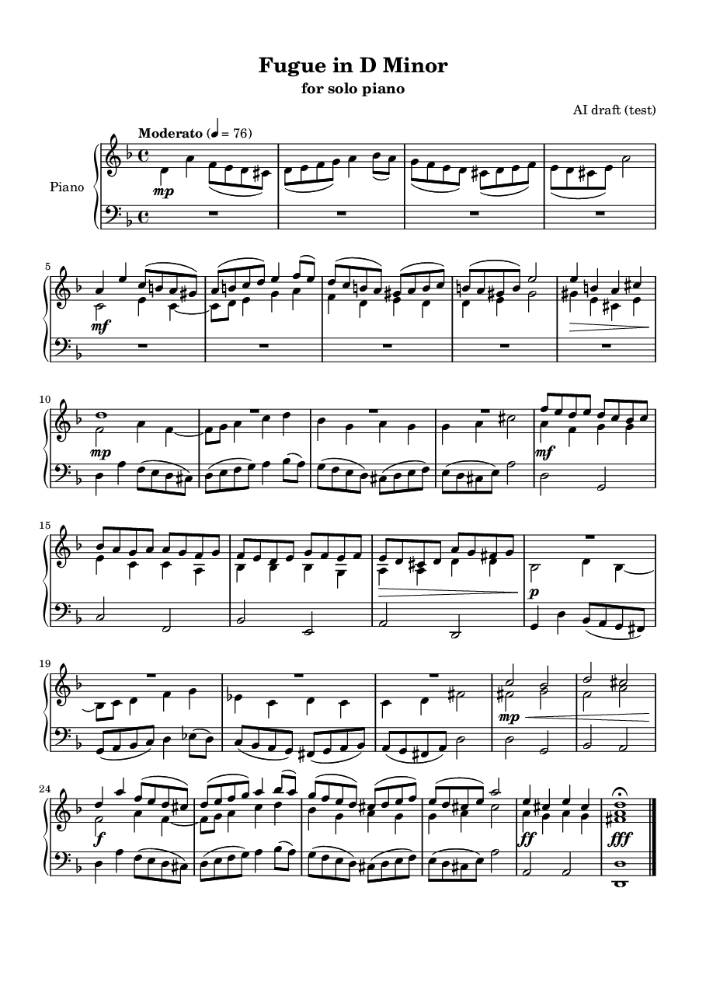
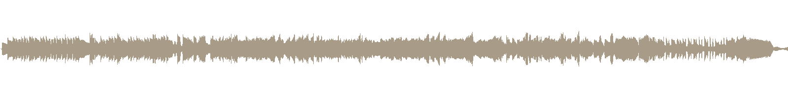
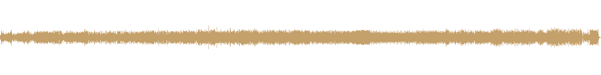

Ausgangs-MP3
ca. 1:35 · LilyPond-Render

0:00 / –:––
Score · Sound · Ensemble
Vom Fugenthema zum Klangensemble
Ein Album-Dokument · hörbar
NilsP
Was entsteht, wenn ein Fugenthema zuerst symbolisch gesetzt wird — erkennbar, klar, nicht virtuos — und danach durch generative Transformation in ein Ensemble aus Horn und Rohrblatt wandert?
Horn and Reed Fugue beginnt als D-Moll-Fuge für Solo-Klavier in LilyPond. Über eine Suno-Zwischenstufe wird daraus das Album-Finale.
Bachscher Fugengeist, ohne Virtuositäts-Druck — Motiv erkennbar, mittlere Dichte, künstlerische Freiheit:
Der Mensch bleibt Systemautor: Verfahren setzen · hören · auswählen · veröffentlichen.
Drei Stimmen am Klavier. Thema in D-Moll: Quinte aufwärts, absteigende Wendung, Dominantschluss — dann Beantwortung, Zwischenspiel, Durchführung, Coda.
T. 1–4 Thema (Alt) · T. 5–8 Beantwortung · T. 10–13 Bass-Eintritt · T. 14–17 Zwischenspiel · T. 18–21 G-Moll · T. 24–27 Schluss · T. 28–29 Coda

Notensatz · LilyPond-Ausgabe
Der Score ist Symbol. Für Suno braucht es Klang — aber noch kein Kunstwerk. LilyPond schreibt MIDI; FluidSynth und Soundfont erzeugen schlichtes Klavier-Audio; ffmpeg normalisiert.

Diese Stufe ist bewusst nüchtern: sie trägt Motiv und Stimmführung weiter — nicht die Aura.
Das Ausgangs-MP3 geht nach Suno. Daraus entsteht fugue2 — noch nah am Fugenimpuls, schon generativ geatmet.

Bleibt
Erkennbares Thema · kontrapunktische Erinnerung · d-Moll-Farbe · Moderato-Atem
Wandelt sich
Klangfarbe · zeitliche Proportion · Gestik · performative Dichte
Vom Score über die Zwischenstufe zur Auswahl: welche Transformation das Fugenthema als Horn- und Rohrblatt-Ensemble tragen darf.
Prinzip
Jede Stufe erbt Erinnerung an die vorige. Der Mensch entscheidet nicht die Noten der ersten Seite neu, sondern welche Stimme weiterleben darf.
Finale Form: Horn and Reed Fugue. Weit vom schlichten LilyPond-Render — und doch vom gleichen Fugenthema getragen.

| Stufe | Rolle | Dauer |
|---|---|---|
| Render | Schnittstelle · Klavier-Fuge | 1:35 |
| fugue2 | Suno-Zwischenstufe | 1:16 |
| Final | Horn and Reed Fugue | 3:10 |
Dieses Dokument hält den Workflow fest — nicht jede verworfene Version. Der Wert liegt in der Kette: erkennbares Thema, gültiger Score, hörbare Schnittstelle, generative Transformation, menschliche Auswahl.
NilsP · 2026
Das Thema bleibt. Die Stimmen wandeln sich.